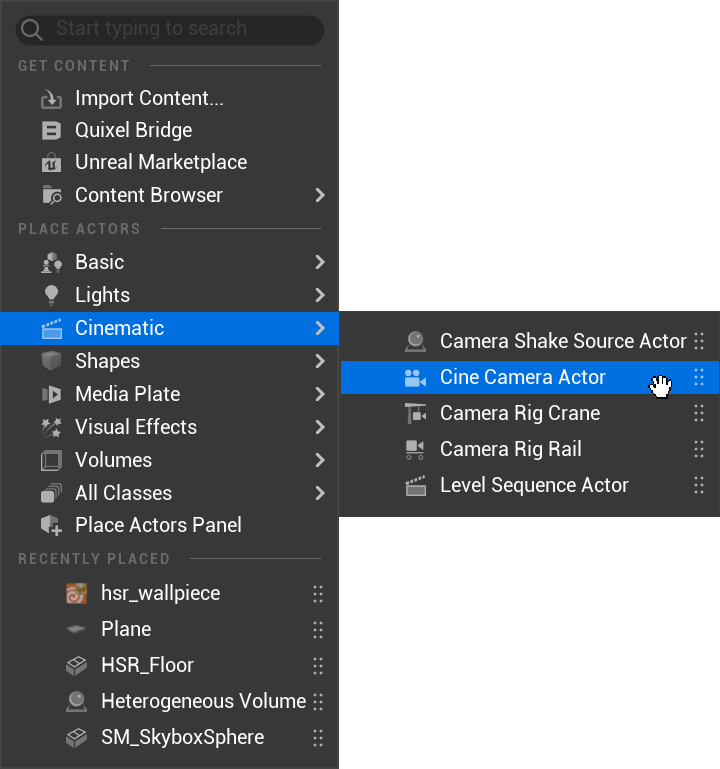
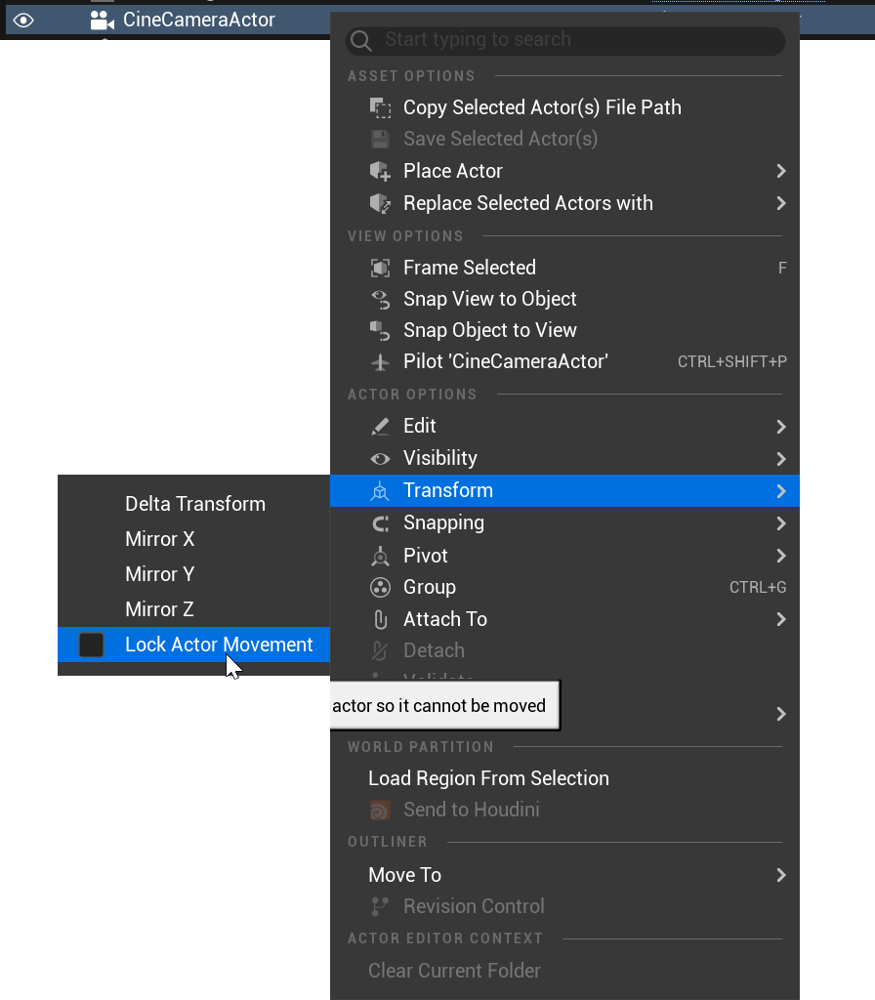
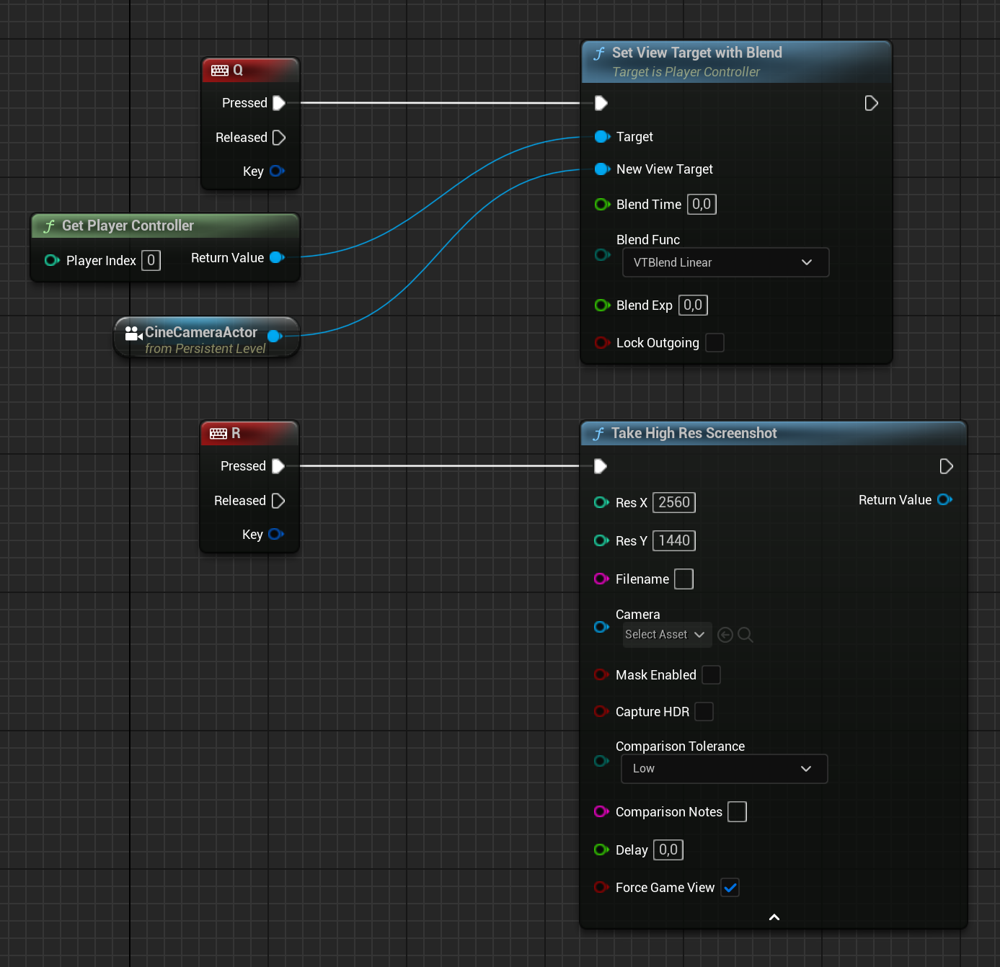

I bridge art and technology to build efficient pipelines, dependable
tools, and polished real-time experiences. My work turns complex
production challenges into workflows artists can use with confidence.
Assets
Production-ready 3D assets built with clean topology, practical
UVs, and real-time performance in mind.
Coding
Artist-friendly tools and automation that remove repetitive work,
reduce errors, and keep teams moving quickly.
Pipeline
Scalable workflows that connect DCC tools and game engines while
keeping assets consistent from creation to delivery.
Technical Art
Real-time problem solving across shaders, procedural systems,
optimization, rigging, and the space between art and engineering.
Selected work
Focused studies in hard-surface modeling, material definition, and
presentation—built to hold up from hero shot to close inspection.
01 / Hero asset
Frontier Revolver
A real-time hard-surface study balancing readable forms with
close-up mechanical detail. The asset was developed around a
clean subdivision workflow and material separation that keeps
steel, wood, and wear visually distinct.
Role
Modeling · Texturing · Lookdev
Tools
Blender · Substance 3D · Unreal Engine
Focus
Hard Surface · Real-Time · Materials
02 / Prop study
Precision Rifle
A presentation-driven prop study focused on silhouette,
manufactured detail, and controlled surface response. Macro
framing tests how the asset reads beyond a standard beauty shot.
Role
Modeling · Shading · Lighting
Tools
Blender · Substance 3D
Focus
Product Rendering · Detail · Composition
03 / Material study
Workshop Wrench
A material storytelling exercise built around chipped paint,
exposed metal, grease, and workshop wear. The goal was a useful,
grounded prop whose history reads immediately in every crop.
Role
Modeling · Texturing · Presentation
Tools
Blender · Substance 3D
Focus
Weathering · Material Definition · Story
Blog
A practical roadmap for technical art—small discoveries, production
notes, and Unreal Engine breakdowns documented as I go.
Blender
Increase Cylinder Subdivision
Houdini
Houdini in Unreal Engine
Unreal Engine
Level Blueprint for Screenshots
Blueprints
Kelp Spline Blueprint Breakdown
Available for collaboration
Let's build a better pipeline
Whether you need a technical artist to bridge disciplines, a tool
that removes friction, or a production workflow that scales, I’d
be happy to hear what you’re working on.
This way you can increase the polycount of an existing cylinder.
Houdini / Unreal
Houdini in Unreal Engine
Use the following command with the asset type you want to inspect:
Houdini.DumpGenericAttribute {asset_type}
Unreal Engine
Level Blueprint for Screenshots
A visual blueprint reference for building a repeatable screenshot setup directly inside an Unreal level.



Blueprints / Unreal Engine
Kelp Spline Blueprint Breakdown
Introduction
The Kelp Spline Blueprint in Unreal Engine is a versatile foundational tool for creating underwater kelp simulations. Its simplicity and effectiveness make it useful for bringing lifelike kelp forests to virtual environments.